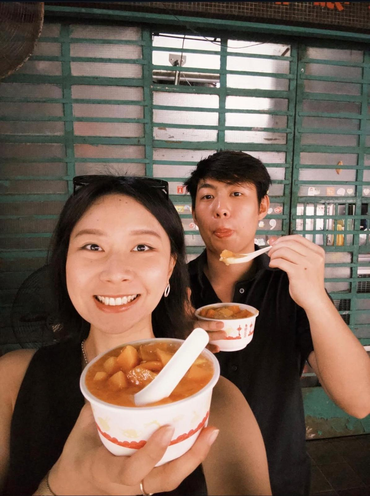

🐣 Happy Anniversary
Sukibb ❤️


✈️ 台灣甜蜜之旅 ✈️
日期：12 - 14 號
🎫 專屬情人通行證 🎫
我會帶你去玩盡佢！夜市、溫泉、秘境打卡 💕
🐰 Miffy 認證・愛心航班 🐰
💌 P.S. 第一次寫 Code 做驚喜俾你，雖然個網頁有啲蝦碌，但入面全部都係我嘅誠意呀！🙈 唔好笑我呀！
🎁 而家你直接喺呢度就可以聽「能不能和我留在台北」啦～ 我終於搞掂個音樂播放器，以後回憶就有BGM陪住 🌟
🎁 而家你直接喺呢度就可以聽「能不能和我留在台北」啦～ 我終於搞掂個音樂播放器，以後回憶就有BGM陪住 🌟